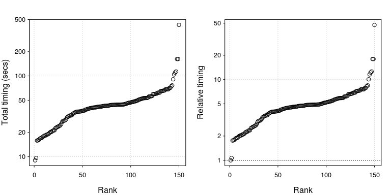
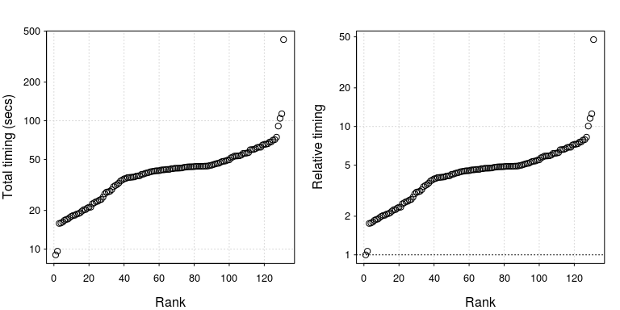

- 1 Overview
- 2 Introduction
- 3 Efficient set-up
- 4 Efficient hardware
- 5 Efficient workflow
- 6 Efficient collaboration
- 7 Efficient programming
- 8 Efficient Rcpp
- 9 Efficient Memory
- 10 Efficient Learning
4 Efficient hardware
In the previous chapter we saw how relatively simple tweaks to our system set-up can result in substantial time savings. In this chapter we explore the relationship between computer hardware and the speed of code execution. The goal is to help you decide whether the benefits of upgrading your hardware are worth the cost.
We’ll begin with an introductory section on computer storage and memory and how it is measured, before moving on to individual computer components.
4.1 Introduction: what is a byte?
A computer cannot store “numbers” or “letters”. The only thing a computer can store and work with is bits. A bit is binary, it is either a \(0\) or a \(1\). In fact from a physics perspective, a bit is just a blip of electricity that either is or isn’t there.
In the past the ASCII character set dominated computing. This set defines \(128\) characters including \(0\) to \(9\), upper and lower case alpha-numeric and a few control characters such as a new line. To store these characters required \(7\) bits since \(2^7 = 128\), but \(8\) bits were typically used for performance reasons. Table 3.1 gives the binary representation of the first few characters.
| Bit representation | Character |
|---|---|
| \(01000001\) | A |
| \(01000010\) | B |
| \(01000011\) | C |
| \(01000100\) | D |
| \(01000101\) | E |
| \(01010010\) | R |
Table 3.1: The bit representation of a few ASCII characters.
The limitation of only gives having \(256\) characters led to the development of Unicode, a standard framework aimed at creating a single character set for every reasonable writing system. Typically, Unicode characters require sixteen bits of storage.
Eight bits is one byte, or ASCII character. So two ASCII characters would use two bytes or \(16\) bits. A pure text document containing \(100\) characters would use \(100\) bytes (\(800\) bits). Note that mark-up, such as font information or meta-data, can impose a substantial memory overhead: an empty .docx file requires about \(3,700\) bytes of storage.
When computer scientists first started to think about computer memory, they noticed that \(2^{10} = 1024 \simeq 10^3\) and \(2^{20} =1,048,576\simeq 10^6\), so they adopted the short hand of kilo- and mega-bytes. Of course, everyone knew that it was just a short hand, and it was really a binary power. When computers became more wide spread, foolish people like you and me just assumed that kilo actually meant \(10^3\) bytes.
Fortunately the IEEE Standards Board intervened and created conventional, internationally adopted definitions of the International System of Units (SI) prefixes. So a kilobyte (KB) is \(10^3 = 1000\) bytes and a megabyte (MB) is \(10^6\) bytes or \(10^3\) kilobytes (see table 3.2). A petabyte is approximately \(100\) million drawers filled with text. Astonishingly Google processes around \(20\) petabytes of data every day.
| Factor | Name | Symbol | Origin | Derivation | |
|---|---|---|---|---|---|
| \(2^{10}\) | kibi | Ki | Kilobinary: | \((2^{10})^1\) | Kilo: \((10^3)^1\) |
| \(2^{20}\) | mebi | Mi | Megabinary: | \((2^{10})^2\) | Mega: \((10^3)^2\) |
| \(2^{30}\) | gibi | Gi | Gigabinary: | \((2^{10})^3\) | Giga: \((10^3)^3\) |
| \(2^{40}\) | tebi | Ti | Terabinary: | \((2^{10})^4\) | Tera: \((10^3)^4\) |
| \(2^{50}\) | pebi | Pi | Petabinary: | \((2^{10})^5\) | Peta: \((10^3)^5\) |
Table 3.2: Data conversion table. Credit: http://physics.nist.gov/cuu/Units/binary.html
Even though there is now an agreed standard for discussing memory, that doesn’t mean that everyone follows it. Microsoft Windows, for example, uses 1MB to mean \(2^{20}\)B. Even more confusing the capacity of a \(1.44\)MB floppy disk is a mixture, \(1\text{MB} = 10^3 \times 2^{10}\)B.
4.2 Random access memory: RAM
Random access memory (RAM) is a type of computer memory that can be accessed randomly: any byte of memory can be accessed without touching the preceding bytes. RAM is found in computers, phones, tablets and even printers. The amount of RAM R has access to is directly related to the size of data sets that it can process. As the amount of RAM your machine has increases, the size of datasets you can analyse also increases, so it is important to have sufficient RAM for your work.

Figure 3.1: Two \(8\)GB RAM cards. Credit: https://commons.wikimedia.org/wiki/File:Two_8_GB_DDR4-2133_ECC_1.2_V_RDIMMs.jpg
{kind=link}
Even if the original data set is relatively small, the analysis can generate large objects. For example, suppose we want to perform standard cluster analysis. The built-in data set USAarrests, is a data frame with \(50\) rows and \(4\) columns. Each row corresponds to a state in the USA
head(USArrests, 3)## Murder Assault UrbanPop Rape
## Alabama 13.2 236 58 21.2
## Alaska 10.0 263 48 44.5
## Arizona 8.1 294 80 31.0If we want to group states that have similar crime statistics, a standard first step is to calculate the distance or similarity matrix
d = dist(USArrests)When we inspect the object size of the original data set and the distance object using the pryr package
pryr::object_size(USArrests)## 5.23 kBpryr::object_size(d)## 14.3 kBwe have managed to create an object that is three times larger than the original data set. In fact the object d is a symmetric \(n \times n\) matrix, where \(n\) is the number of rows in USAarrests. Clearly, as n increases the size of d increases at rate \(O(n^2)\). So if our original data set contained \(10,000\) records, the associated distance matrix would contain almost \(10^8\) values. Of course since the matrix is symmetric, this corresponds to around \(50\) million unique values. A rough rule of thumb is that your RAM should be three times the size of your data set.
Another benefit of having increasing the amount of onboard RAM is that the ‘garbage collector’, a process that runs periodically to free-up system memory occupied by R, is called less often (we will cover this in more detail in chapter XXX).
It is straightforward to determine how much RAM you have. Under Windows,
- Clicking the
Startbutton picture of the Start button, then right-clicking Computer. Next click onProperties. - In the
Systemsection, you can see the amount of RAM your computer has next to theInstalled memory (RAM)section. Windows reports how much RAM it can use, not the amount installed. This is only an issue if you are using a 32-bit version of Windows.
In Mac, click the Apple menu. Select About This Mac and a window appears with the relevant information.
On almost all Unix-based OSs, you can find out how much RAM you have using the code vmstat, whilst on all Linux distributions, you can use the command free. Using this in conjuction with the -h tag will provide the answer in human readable format, as illustrated below for a 16 Gb machine:
$ free -h
total used free
Mem: 15G 4.0G 11G It is sometimes possible to increase your computer’s RAM. On the computer motherboard, there are typically \(2\) or \(4\) RAM or memory slots. If you have free slots, then you can add more RAM. However, it is common that all slots are already taken. This means that to upgrade your computer’s memory, some or all of the RAM will have to be removed. To go from \(8\)GB to \(16\)GB, for example, you may have to discard the two \(4\)GB RAM cards and replace them with two \(8\)GB cards. Increasing your laptop/desktop from 4GB to \(16\)GB or \(32\)GB is cheap and should definitely be considered. As R Core member Uwe Ligges states,
fortunes::fortune(192)##
## RAM is cheap and thinking hurts.
## -- Uwe Ligges (about memory requirements in R)
## R-help (June 2007)It is a testament to the design of R that it is still relevant and its popularity is growing. Ross Ihaka, one of the originators of the R programming language, made a throw-away comment in 2003:
fortunes::fortune(21)##
## I seem to recall that we were targetting 512k Macintoshes. In our dreams
## we might have seen 16Mb Sun.
## -- Ross Ihaka (in reply to the question whether R&R thought when they
## started out that they would see R using 16G memory on a dual Opteron
## computer)
## R-help (November 2003)Considering that a standard smart phone now contains \(1\)GB of RAM, the fact that R was designed for “basic” computers, but can scale across clusters is impressive. R’s origins on computers with limited resources helps explain its efficiency at dealing with large datasets.
4.2.1 Exercises
The following two exercises aim to help you determine if it is worthwhile upgrading your RAM.
- R loads everything into memory, i.e. your computers RAM. How much RAM do you have?
- Using Google, how much does it cost (in pounds) to double the amount of available RAM on your system?
4.3 Hard drives: HDD vs SSD
Unless you have a fairly expensive laptop your computer probably has a standard hard disk drive (HDD). HDDs were first introduced by IBM in 1956. Data is stored using magnetism on a rotating platter, as shown in Figure 3.2. The faster the platter spins, the faster the HDD can perform. Many laptop drives spin at either \(5400\)RPM (Revolutions per Minute) or \(7200\)RPM. The major advantage of HDDs is that they are cheap, making a \(1\)TB laptop standard.

Figure 3.2: A standard 2.5" hard drive, found in most laptops. Credit: https://en.wikipedia.org/wiki/Hard_disk_drive
Solid state drives (SSDs) can be thought of as large, but more sophisticated versions of USB sticks. They have no moving parts and information is stored in microchips. Since there are no moving parts, reading/writing is much quicker. SSDs have other benefits: they are quieter, allow faster boot time (no ‘spin up’ time) and require less power (more battery life).
The read/write speed for a standard HDD is usually in the region of \(50-120\)MB/s (usually closer to \(50\)MB). For SSDs, speeds are typically over \(200\)MB/s. For top-of-the-range models this can approach \(500\)MB/s. If you’re wondering, read/write speeds for RAM is around \(2-20\)GB/s. So at best SSDs are at least one order of magnitude slower than RAM, but still faster than standard HDDs.
4.4 Operating systems: 32-bit or 64-bit
When we suggest that you should just buy more RAM, this assumes that you are using a \(64\)-bit operating system. A \(32\)-bit machine can access at most only \(4\)GB of RAM. Although some CPUs offer solutions to this limitation, if you are running a \(32\)-bit operating system, then R is limited to around \(3\)GB RAM. If you are running a \(64\)-bit operating system, but only a \(32\)-bit version of R, then you have access to slightly more memory (but not much). Modern systems should run a \(64\)-bit operating system, with a \(64\)-bit version of R. Your memory limit is now measured as \(8\) terabytes for Windows machines and \(128\)TB for Unix-based OSs.
To find precise details consult the R help pages help("Memory-limits") and help("Memory").
4.4.1 Exercises
These exercises aim to condense the previous section into the key points.
- Are you using a \(32\)-bit or \(64\)-bit operating system?
- Are you using \(32\)-bit or \(64\)-bit version of R?
- What are the results of running the command
memory.limit()?
4.5 Central processing unit (CPU)
The central processing unit (CPU), or the processor, is the brains of a computer. The CPU is responsible for performing numerical calculations. The faster the processor, the faster our code will run. The clock speed (or clock rate, measured in hertz) is frequency with which the CPU executes instructions. The faster the clock speed, the more instructions a CPU can execute in a section. CPU clock speed for a single CPU has been fairly static in the last couple of years, hovering around 3.4GHz (see figure 3.3).

Figure 3.3: CPU clock speed. The data for this figure was collected from web-forum and wikipedia. It is intended to indicate general trends in CPU speed.
Unfortunately we can’t simply use clock speeds to compare CPUs, since the internal architecture of a CPU plays a crucial role in determining the CPU performance. The R package benchmarkme provides functions for benchmarking your system and contains data from previous benchmarks. Figure 3.4 shows the relative performance for eight different CPUs. All eight processors are Intel. The fastest processor in this benchmark study was the i7 CPU 870, which was released in 2009. In comparison, the Xeon Processor X3220, released in 2007, is over three times slower.

Figure 3.4: CPU benchmarks from the R package, benchmarkme. Each point represents an individual CPU result.
4.6 Cloud computing
Cloud computing uses networks of remote servers, instead of a local computer, to store and analyse data. It is now becoming increasingly popular to rent cloud computing resources.
4.6.1 Amazon EC2
Amazon Elastic Compute Cloud (EC2) is one of a number of providers of this service. EC2 makes it (relatively) easy to run R instances in the cloud. Users can configure the operating system, CPU, hard drive type, the amount of RAM and where your project is physically located.
If you want to run a server in the Amazon EC2 cloud, you have to select the system you are going to boot up. There are a vast array of pre-packaged system images. Some of these images are just basic operating systems, such as Debian or Ubuntu, which require further configuration. There is also an Amazon machine image that specifically targets R and RStudio.
4.6.2 Exercise
To assess whether you should consider cloud computing, how much does it cost to rent a machine comparable to your laptop in the cloud?